What I built
A terrain generator that builds a mesh from a Perlin noise heightmap and colors and textures it per biome:
- a heightmap from layered Perlin noise (octaves), shaped with a power curve
- colors based on height, with blending between the color bands
- biomes picked from a temperature map and a moisture map
- textures per biome and height, plus a separate color and texture for steep slopes
- an ImGui editor to change biome colors, textures and heights while the program runs
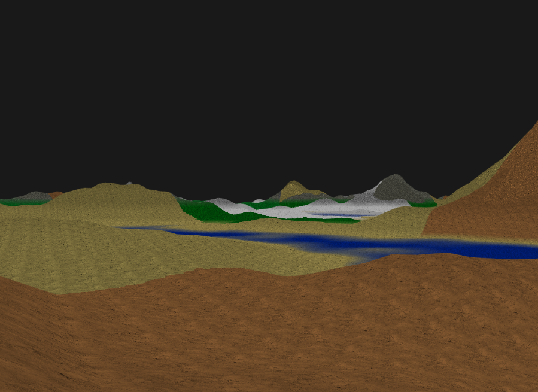

Technical details
I wrote the text below as a blog post for the assignment. It goes through the generator step by step.
Introduction
The terrain of a game is really important, especially in an open-world game, because that's where you spend most of your time. Creating realistic and dynamic terrain adds a lot to the experience of a game, but it's also one of the harder parts to get right. In this post I'll go through how I made a basic terrain generator.
Step one: noise
The first step in creating terrain is generating a heightmap, which determines the elevation of the terrain at specific points. To make this heightmap I use Perlin noise. Perlin noise is a way to generate random-looking patterns that are smooth and continuous, which makes it great for natural shapes like terrain. Instead of just picking random values, it interpolates between gradients, so the result has no sharp jumps.
In this code snippet you can see how I fill the noise vector.
std::vector<float> noise(width * height);
for (int y = 0; y < height; y++) {
for (int x = 0; x < width; x++) {
float noiseValue = perlin.octave2D(x ,y, octaves);
noise[index] = noiseValue;
}
}The code goes over the width and height of the terrain and gets a value from a noise function from the siv::PerlinNoise library. It then stores this in an array for later use.
Octaves
A map made with a single layer of Perlin noise does not have enough detail. To add more detail you increase the number of octaves. Octaves are layers of noise added on top of each other, each one with a higher frequency and lower amplitude. The first octave gives you the broad shape of the terrain, and the ones after that add smaller and smaller details. Combined, they give a more complex and realistic result.
Here's the difference between using 1 octave and 4 octaves.
Step two: elevation
Now that you have the height data for your terrain, you need to apply it to a mesh. I start with a flat plane mesh, and for each vertex I look up the height in the noise map based on its position.
When applying the heightmap directly to a flat plane, it looks like this:
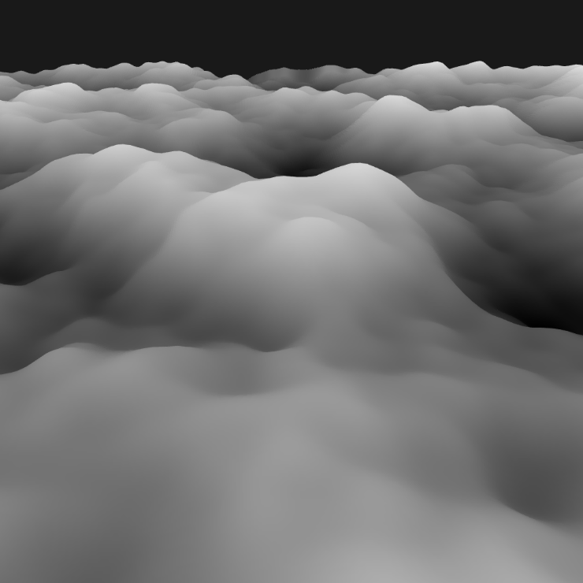
The problem with this terrain is that it looks bland. It doesn't have high mountains or flat land. You can fix this by raising the height to a power, which changes the shape of the noise curve. A power less than 1 gives you more flat areas like plains or plateaus. A power greater than 1 pushes the lower areas down and pulls the higher areas up, which gives steeper mountains and deeper valleys.
for (int y = 0; y < height; y++) {
for (int x = 0; x < width; x++) {
float height = pow(noise[x + y * width], 4);
positions.push_back(vec3(x, terrainHeight, z));
}
}This loop again goes over the width and height of the terrain. It gets the noise value from the noise vector, raises it to a power and sets the vertex height to the result.
The images below show what different powers do to the terrain.
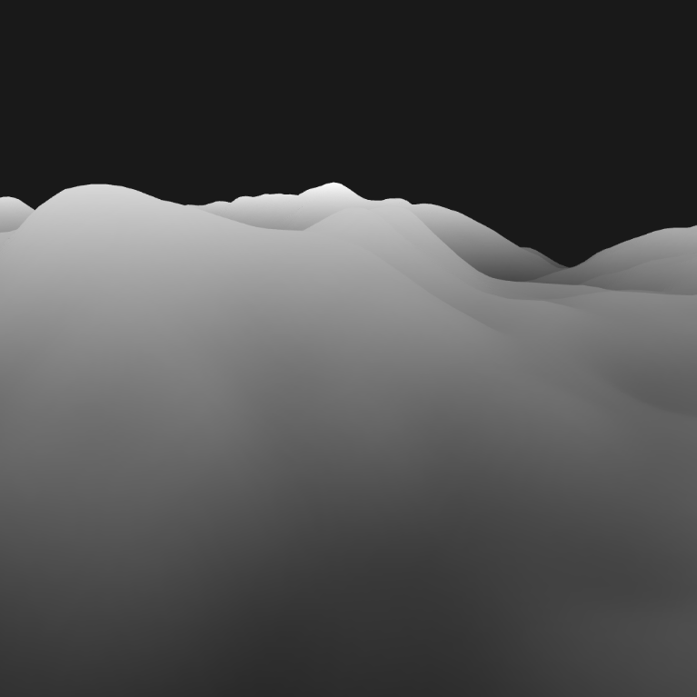
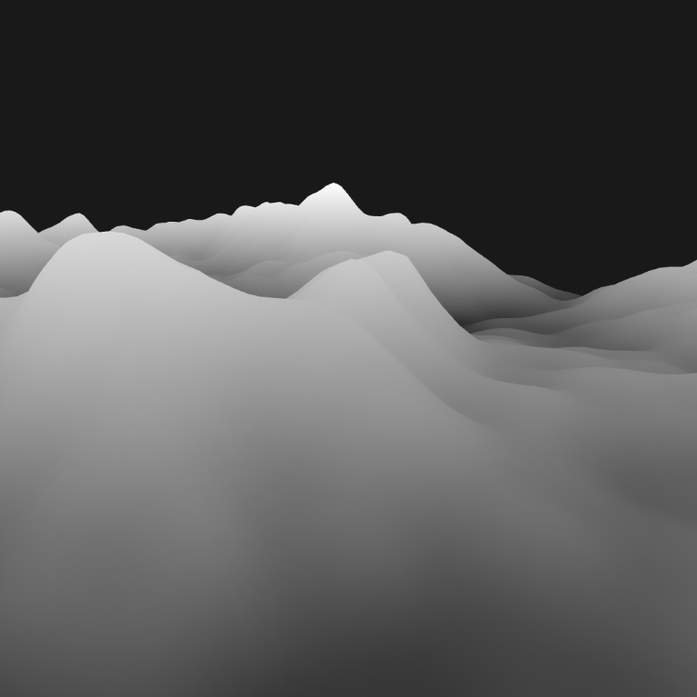
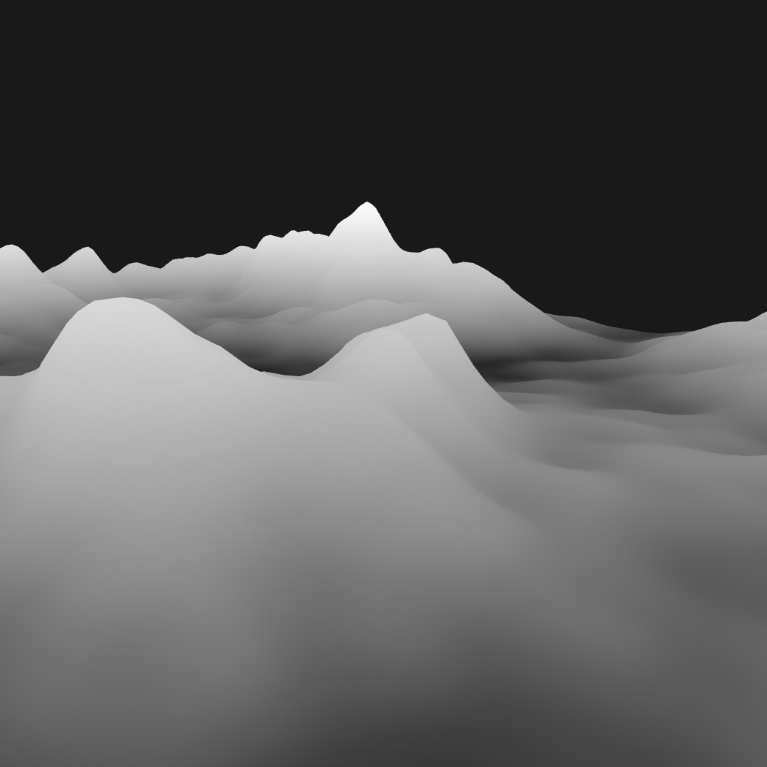
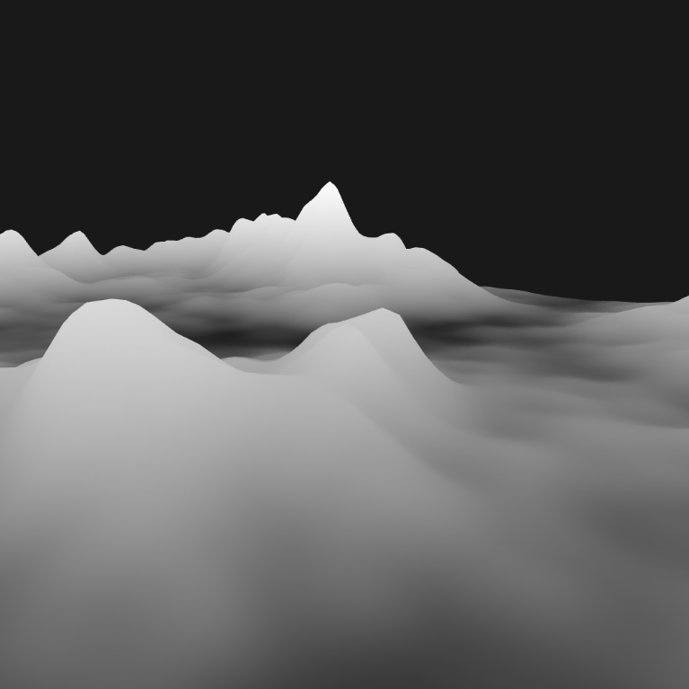
Step three: colors
Now that you have the terrain mesh, the next step is to add color. I do this by making a list of terrain colors, each one for a specific height range, and applying them to the mesh.
struct TerrainColor
{
std::string name;
float height;
glm::vec3 color;
};
std::vector<TerrainColor> terrainColors = {
{"DeepWater", 0.20f, glm::vec3(35, 60, 182)},
{"Water", 0.30f, glm::vec3(46, 81, 255)},
{"Beach", 0.35f, glm::vec3(245, 245, 122)},
{"Grass", 0.55f, glm::vec3(24, 212, 11)},
{"HighGrass", 0.75f, glm::vec3(14, 135, 5)},
{"Mountain", 0.80f, glm::vec3(115, 113, 111)},
{"HighMountain", 0.95f, glm::vec3(56, 56, 55)},
{"Snow", 1.00f, glm::vec3(255, 255, 255)}
};The shader uses these values to color the terrain. It gets the color from this function:
vec3 getColor(float height) {
vec3 color = vec3(1.0);
for (int i = 0; i < numItems; ++i) {
if (height <= colorMap[i].colorHeight) {
color = colorMap[i].color.rgb;
break;
}
}
return color;
}The function takes the height as input and returns a color. It goes over the list of colors and checks if the height is lower than the height of the current entry. If it is, it returns that color for the terrain.
After applying the height and color values to the mesh, I blend the edges between colors so they don't have jagged edges. I do this by calculating how far a point is from a border and interpolating between the two bordering colors. I added the following code to the getColor function for this.
//Changed code in GetColor function
for (int i = 0; i < currentBiome.numItems; ++i) {
float blendRange = 0.05;
if (height <= colorMap[i].colorHeight + blendRange) {
if (i == numItems) {
color = colorMap[i].color.rgb;
} else {
color = blendColor(blendRange, height, i);
}
break;
}
}
//Function for blending colors
vec3 blendColor(float blendRange, float height, int index) {
vec3 color = vec3(1.0);
float lowerBound = colorMap[index].colorHeight - blendRange;
float upperBound = colorMap[index].colorHeight + blendRange;
if (height >= lowerBound && height <= upperBound) {
float blendFactor = (height - lowerBound) / (upperBound - lowerBound);
vec3 lowerColor = colorMap[index].color.rgb;
vec3 upperColor = colorMap[index + 1].color.rgb;
color = mix(lowerColor, upperColor, blendFactor);
} else {
color = colorMap[index].color.rgb;
}
return color;
}The added code sets a blend range. The blendColor function checks if the height is near the edge where the color changes. If so, it calculates a blend factor based on how far the height is from the color change, mixes the two colors and returns the result.
With the slider below you can see the difference that blending the colors makes.
Step four: biomes
Now that the terrain has color, the next step is variation. I did this by adding biomes. First I generate two noise maps, one for temperature and one for moisture. The table below shows which biome I assign to which moisture and temperature values. This gives a biome map where, for example, desert and snow biomes never share a border.
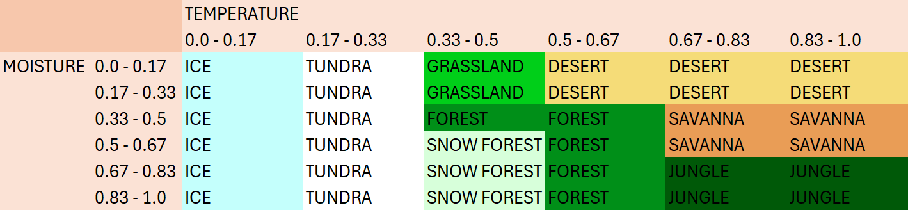
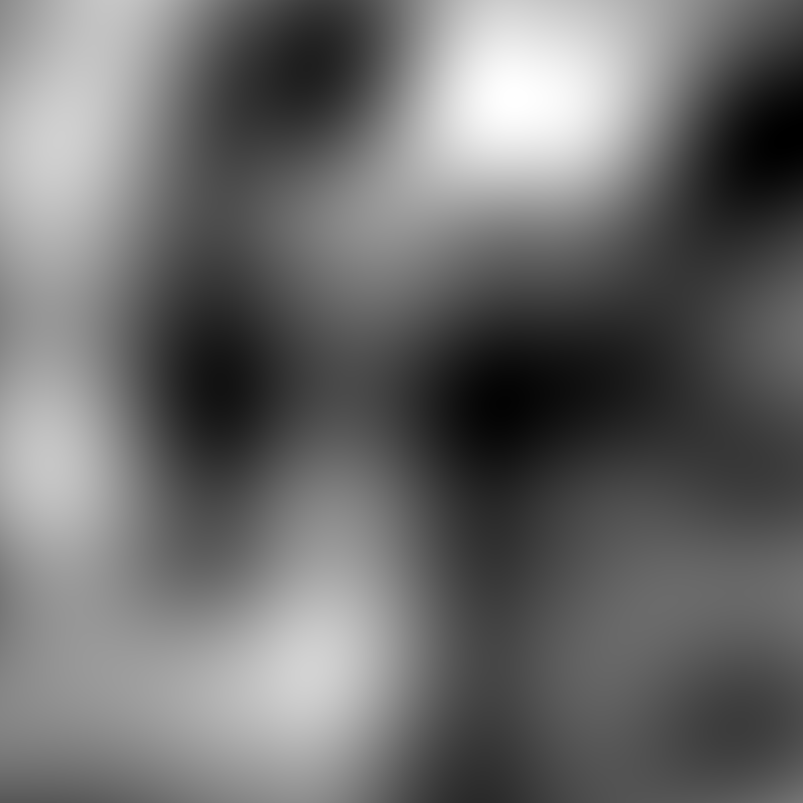
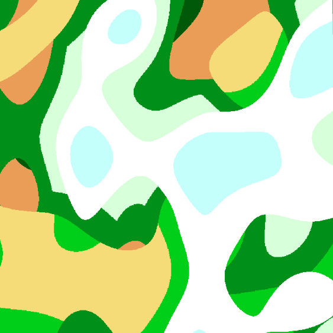
Each biome now has its own vector of TerrainColor structs, so every biome can have different colors. In the shader it first calculates which biome index to use for the colors, in this function:
const int biomeTable[6][6] = int[][](
int[](0, 1, 2, 3, 3, 3), // 0: Ice, 1: Tundra, 2: Grassland, 3: Desert
int[](0, 1, 2, 3, 3, 3),
int[](0, 1, 4, 4, 5, 5), // 4: Forest, 5: Savanna
int[](0, 1, 6, 4, 5, 5), // 6: Snow Forest
int[](0, 1, 6, 4, 7, 7), // 7: Jungle
int[](0, 1, 6, 4, 7, 7)
);
int getBiomeIndex(float moisture, float temperature) {
for (int i = 0; i < 6; ++i) {
if (moisture >= moistureRanges[i] && moisture < moistureRanges[i + 1]) {
moistureIndex = i;
break;
}
}
for (int i = 0; i < 6; ++i) {
if (temperature >= temperatureRanges[i] && temperature < temperatureRanges[i + 1]) {
temperatureIndex = i;
break;
}
}
return biomeTable[moistureIndex][temperatureIndex];
}It first calculates the moisture index from the moisture noise map, and then does the same for the temperature. It then looks up the biomeTable and returns an int for the biome at that point of the terrain.
Step five: textures
With the structure and biomes done, the next step is to make the terrain look nicer with textures. The biome color structs now also have a texture ID next to the color and height values. This ID is the index in a texture list that is sent to the shader.
The following code shows how I get a texture in the shader based on the biome index and height.
vec3 getTexture(float height, int biomeIndex) {
int layer = 0;
biome_struct currentBiome = biomes[biomeIndex];
vec2 scaled_texture_coords = v_texture0 * terrainScale;
vec3 textureColor;
for (int i = 0; i < currentBiome.numItems; ++i) {
if (height <= currentBiome.colorMap[i].colorHeight) {
layer = currentBiome.colorMap[i].textureID;
textureColor = texture(s_terrain_texture_array,
vec3(scaled_texture_coords, layer)).rgb;
break;
}
}
return textureColor;
}This function works much like getColor. It first scales the texture coordinates, then goes over the color map of the current biome. When it finds the right height, it returns the texture color for that biome and height.
This is how the terrain looks with the textures applied:
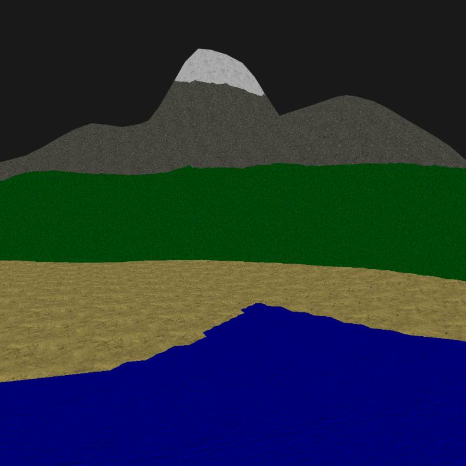
Step six: details
The terrain looks much better with textures, but the sharp transitions between colors and textures at different heights still don't look great. I fixed this by blending the two bordering colors and textures: if a point is within the blend range, it interpolates between them.
float blendRange = 0.05;
if (height <= currentBiome.colorMap[i].colorHeight + blendRange) {
color = blendColor(blendRange, height, currentBiome, i);
break;
}
vec3 blendColor(float blendRange, float height, biome_struct currentBiome, int index) {
vec3 color = vec3(1.0);
float lowerBound = currentBiome.colorMap[index].colorHeight - blendRange;
float upperBound = currentBiome.colorMap[index].colorHeight + blendRange;
float blendFactor = (height - lowerBound) / (upperBound - lowerBound);
vec3 lowerColor = currentBiome.colorMap[index].color.rgb;
vec3 upperColor = currentBiome.colorMap[index + 1].color.rgb;
color = mix(lowerColor, upperColor, blendFactor);
return color;
}With blending between colors and textures, it looks like this:
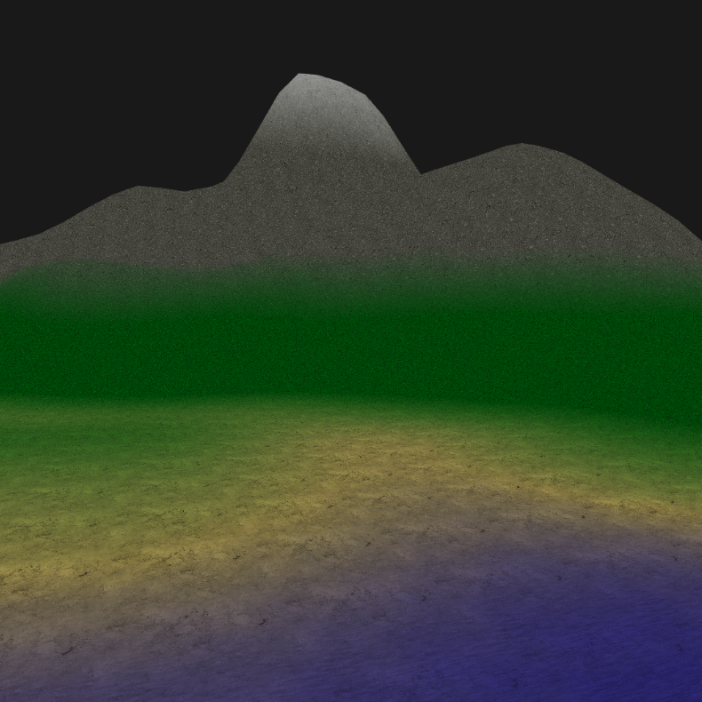
Another way to improve the look of the terrain is to use a different color and texture where the terrain is steep. I calculate the angle from the mesh normal and apply a different color and texture to that part of the mesh.
vec3 normal = normalize(v_normal);
float slopeRadians = acos(normal.y);
float slope = degrees(slopeRadians);In the image below, the terrain that is steeper than 45 degrees gets a different color.
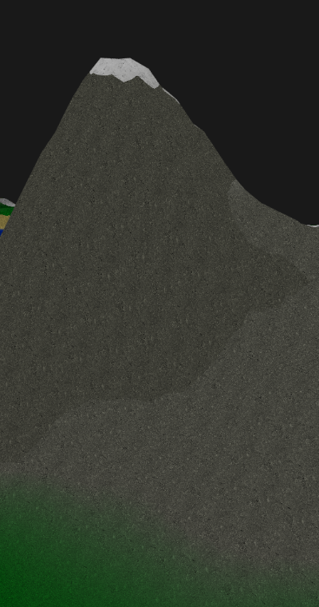
I also made it possible to change the colors and textures of each biome while the program is running. I use ImGui for the input and then update the BiomeDataUBO uniform buffer.
The image below shows the editable data in the program.
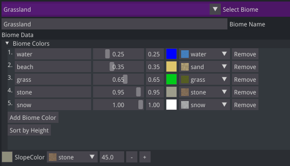
Results
The final terrain generator creates random landscapes with biomes, textures and smooth transitions. The biome data, like colors, textures and heights, can be changed while it runs, which makes it easy to tweak the terrain to get a certain look.
The video at the top of this page shows the terrain updating in real time when I change biome colors and textures and add new colors.
Improvements
There are still some things I would improve:
- Biome blending: the transitions between biomes are abrupt, which gives ugly edges. Blending between biomes would make the transitions smoother and more natural.
- Biome specific height: the terrain height works the same in every biome. Height multipliers per biome would allow more variation, for example jungles that are flatter than the hills of grasslands.